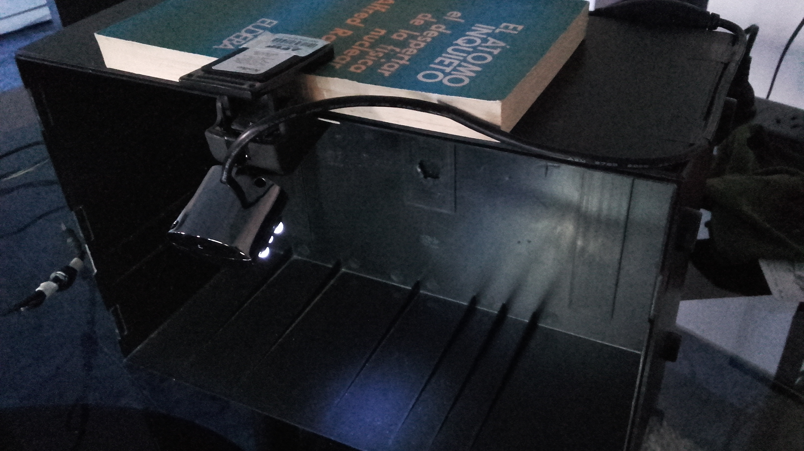

Un sistema de punto de venta o POS, por sus siglas en inglés, es un
sistema que permite administrar pagos, stock, tickets, inventario,
reportes, etc. de todo nuestro negocio. Estos sistemas estan presentes
desde las grandes cadenas de supermercado hasta los negocios
medios/pequeños.
Las grandes cadenas hacen uso de servicios de terceros que proveen
toda la funcionalidad de cobros de su negocio. Algunos hasta tienen un
mercado dentro, ya que junto con el servicio POS brindan soporte de
hardware para sus lectoras de codigos y de tarjetas. Todo esto son
gastos que un negocio o almacen de barrio no puede permitirse,
teniendo que acudir al conocido lapiz y papel. Considerando que
estos sistemas son muy profesionales, complejos y de servicio pago, no
pretende ser este un software que compita en el mercado. Mas bien la
idea es diseñar y desarrollar una herramienta generica que se adapte
al negocio en el que opere, y que permita a quien lo use tener algo
bueno, bonito y gratuito.

Prototipo de lector de codigo de barras
El proyecto esta en proceso de planificacion, pero ya se tiene un
prototipo de lectora de codigo de barra en el que se haran las pruebas
del sistema. Esta compuesta por un gabinete reciclado de un viejo
parlante y una WebCam Kolke KCW-101 de resolución 640 x 480px, vieja
teniendo en cuenta que el minimo en el mercado actual es de 720px.
Algo a considerar es lo siguiente, el piso de una lectora de codigo
nueva es de $3000 pesos, y el de una WebCam ronda $900 pesos, y algo a
tomar en cuenta es que todos los celulares actuales tienen camara de
alta resolucion y casi todos, por no decir todo el mundo, tiene un
dispositivo móvil. Por ende lo que se quiere hacer tambien es que el
sistema se pueda configurar con que dispositivo se quiere operar, de
manera tal que el costo de tener operando un sistema POS sea nulo.